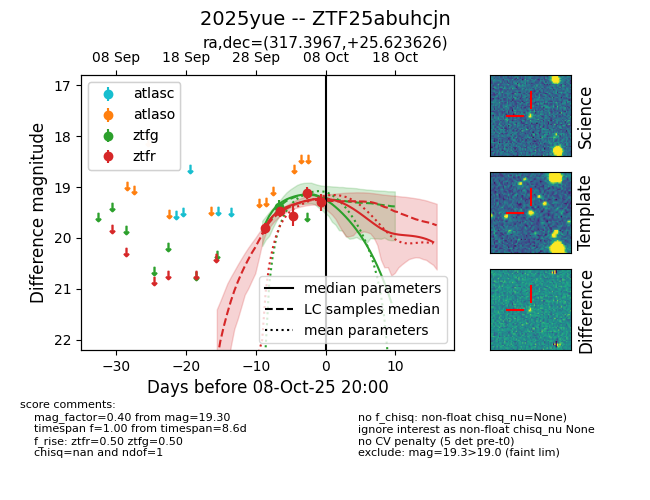
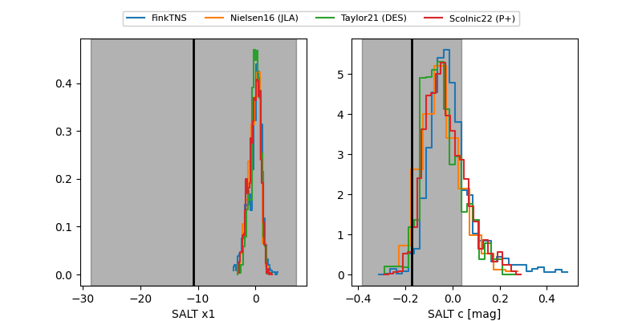

FINK: ZTF25abuhcjn
Lasair: ZTF25abuhcjn
ALeRCE: ZTF25abuhcjn
TNS: 2025yue
YSE: 2025yue
ZTF25abuhcjn (ztf,fink)
2025yue (tns,yse)
equatorial (ra, dec) = (317.3967,+25.62363)
galactic (l, b) = (72.6928,-14.93687)


last ztfg=19.39, ztfr=19.30
1 ztfg, 5 ztfr detections